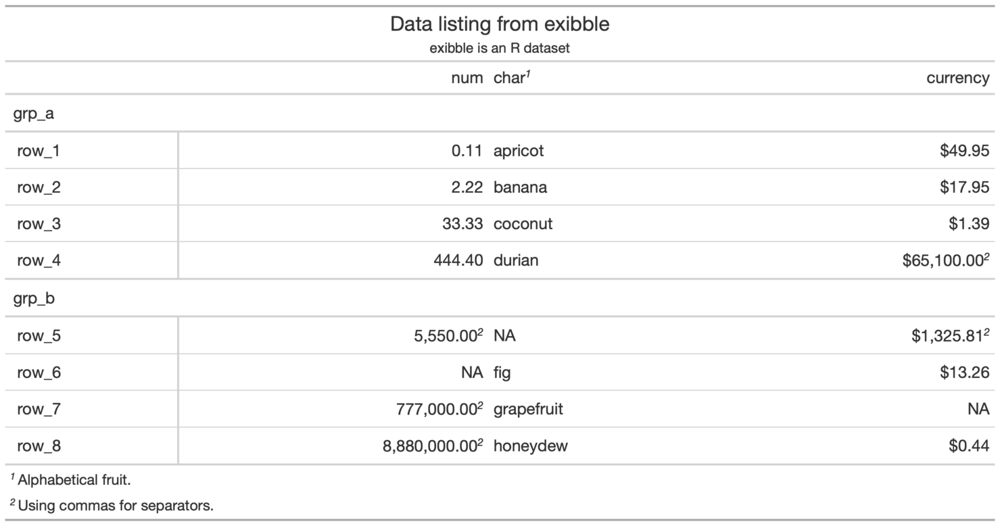

Modify the options available in a table. These options are named by the components, the subcomponents, and the element that can adjusted.
tab_options( data, container.width = NULL, container.height = NULL, container.overflow.x = NULL, container.overflow.y = NULL, table.width = NULL, table.align = NULL, table.margin.left = NULL, table.margin.right = NULL, table.background.color = NULL, table.font.color = NULL, table.font.color.light = NULL, table.font.size = NULL, table.border.top.style = NULL, table.border.top.width = NULL, table.border.top.color = NULL, table.border.right.style = NULL, table.border.right.width = NULL, table.border.right.color = NULL, table.border.bottom.style = NULL, table.border.bottom.width = NULL, table.border.bottom.color = NULL, table.border.left.style = NULL, table.border.left.width = NULL, table.border.left.color = NULL, heading.background.color = NULL, heading.align = NULL, heading.title.font.size = NULL, heading.title.font.weight = NULL, heading.subtitle.font.size = NULL, heading.subtitle.font.weight = NULL, heading.border.bottom.style = NULL, heading.border.bottom.width = NULL, heading.border.bottom.color = NULL, heading.border.lr.style = NULL, heading.border.lr.width = NULL, heading.border.lr.color = NULL, column_labels.background.color = NULL, column_labels.font.size = NULL, column_labels.font.weight = NULL, column_labels.text_transform = NULL, column_labels.vlines.style = NULL, column_labels.vlines.width = NULL, column_labels.vlines.color = NULL, column_labels.border.top.style = NULL, column_labels.border.top.width = NULL, column_labels.border.top.color = NULL, column_labels.border.bottom.style = NULL, column_labels.border.bottom.width = NULL, column_labels.border.bottom.color = NULL, column_labels.border.lr.style = NULL, column_labels.border.lr.width = NULL, column_labels.border.lr.color = NULL, column_labels.hidden = NULL, row_group.background.color = NULL, row_group.font.size = NULL, row_group.font.weight = NULL, row_group.text_transform = NULL, row_group.padding = NULL, row_group.border.top.style = NULL, row_group.border.top.width = NULL, row_group.border.top.color = NULL, row_group.border.bottom.style = NULL, row_group.border.bottom.width = NULL, row_group.border.bottom.color = NULL, row_group.border.left.style = NULL, row_group.border.left.width = NULL, row_group.border.left.color = NULL, row_group.border.right.style = NULL, row_group.border.right.width = NULL, row_group.border.right.color = NULL, table_body.hlines.style = NULL, table_body.hlines.width = NULL, table_body.hlines.color = NULL, table_body.vlines.style = NULL, table_body.vlines.width = NULL, table_body.vlines.color = NULL, table_body.border.top.style = NULL, table_body.border.top.width = NULL, table_body.border.top.color = NULL, table_body.border.bottom.style = NULL, table_body.border.bottom.width = NULL, table_body.border.bottom.color = NULL, stub.background.color = NULL, stub.font.size = NULL, stub.font.weight = NULL, stub.text_transform = NULL, stub.border.style = NULL, stub.border.width = NULL, stub.border.color = NULL, data_row.padding = NULL, summary_row.background.color = NULL, summary_row.text_transform = NULL, summary_row.padding = NULL, summary_row.border.style = NULL, summary_row.border.width = NULL, summary_row.border.color = NULL, grand_summary_row.background.color = NULL, grand_summary_row.text_transform = NULL, grand_summary_row.padding = NULL, grand_summary_row.border.style = NULL, grand_summary_row.border.width = NULL, grand_summary_row.border.color = NULL, footnotes.background.color = NULL, footnotes.font.size = NULL, footnotes.padding = NULL, footnotes.border.bottom.style = NULL, footnotes.border.bottom.width = NULL, footnotes.border.bottom.color = NULL, footnotes.border.lr.style = NULL, footnotes.border.lr.width = NULL, footnotes.border.lr.color = NULL, footnotes.sep = NULL, footnotes.marks = NULL, source_notes.background.color = NULL, source_notes.font.size = NULL, source_notes.padding = NULL, source_notes.border.bottom.style = NULL, source_notes.border.bottom.width = NULL, source_notes.border.bottom.color = NULL, source_notes.border.lr.style = NULL, source_notes.border.lr.width = NULL, source_notes.border.lr.color = NULL, row.striping.background_color = NULL, row.striping.include_stub = NULL, row.striping.include_table_body = NULL )
Arguments
| data | A table object that is created using the |
|---|---|
| container.width, container.height | The width and height of the table's
container. Can be specified as a single-length character with units of
pixels or as a percentage. If provided as a single-length numeric vector,
it is assumed that the value is given in units of pixels. The |
| container.overflow.x, container.overflow.y | Options to enable scrolling
in the horizontal and vertical directions when the table content overflows
the container dimensions. Using |
| table.width | The width of the table. Can be specified as a
single-length character with units of pixels or as a percentage. If
provided as a single-length numeric vector, it is assumed that the value is
given in units of pixels. The |
| table.align | The horizontal alignment of the table in its container. By
default, this is |
| table.margin.left, table.margin.right | The size of the margins on the
left and right of the table within the container. Can be specified as a
single-length character with units of pixels or as a percentage. If
provided as a single-length numeric vector, it is assumed that the value is
given in units of pixels. The |
| table.background.color, heading.background.color, column_labels.background.color, row_group.background.color, stub.background.color, summary_row.background.color, grand_summary_row.background.color, footnotes.background.color, source_notes.background.color | Background colors for the parent element |
| table.font.color, table.font.color.light | The text color used throughout the table. There are two variants:
|
| table.font.size, heading.title.font.size, heading.subtitle.font.size, column_labels.font.size, row_group.font.size, stub.font.size, footnotes.font.size, source_notes.font.size | The font sizes for the parent text element |
| table.border.top.style, table.border.top.width, table.border.top.color, table.border.right.style, table.border.right.width, table.border.right.color, table.border.bottom.style, table.border.bottom.width, table.border.bottom.color, table.border.left.style, table.border.left.width, table.border.left.color | The style, width, and color properties of the table's absolute top and absolute bottom borders. |
| heading.align | Controls the horizontal alignment of the heading title
and subtitle. We can either use |
| heading.title.font.weight, heading.subtitle.font.weight, column_labels.font.weight, row_group.font.weight, stub.font.weight | The font weights of the |
| heading.border.bottom.style, heading.border.bottom.width, heading.border.bottom.color | The style, width, and color properties of the header's bottom border. This
border shares space with that of the |
| heading.border.lr.style, heading.border.lr.width, heading.border.lr.color | The style, width, and color properties for the left and right borders of
the |
| column_labels.text_transform, row_group.text_transform, stub.text_transform, summary_row.text_transform, grand_summary_row.text_transform | Options to apply text transformations to the |
| column_labels.vlines.style, column_labels.vlines.width, column_labels.vlines.color | The style, width, and color properties for all vertical lines ('vlines')
of the the |
| column_labels.border.top.style, column_labels.border.top.width, column_labels.border.top.color | The style, width, and color properties for the top border of the
|
| column_labels.border.bottom.style, column_labels.border.bottom.width, column_labels.border.bottom.color | The style, width, and color properties for the bottom border of the
|
| column_labels.border.lr.style, column_labels.border.lr.width, column_labels.border.lr.color | The style, width, and color properties for the left and right borders of
the |
| column_labels.hidden | An option to hide the column labels. If providing
|
| row_group.border.top.style, row_group.border.top.width, row_group.border.top.color, row_group.border.bottom.style, row_group.border.bottom.width, row_group.border.bottom.color, row_group.border.left.style, row_group.border.left.width, row_group.border.left.color, row_group.border.right.style, row_group.border.right.width, row_group.border.right.color | The style, width, and color properties for all top, bottom, left, and right
borders of the |
| table_body.hlines.style, table_body.hlines.width, table_body.hlines.color, table_body.vlines.style, table_body.vlines.width, table_body.vlines.color | The style, width, and color properties for all horizontal lines ('hlines')
and vertical lines ('vlines') in the |
| table_body.border.top.style, table_body.border.top.width, table_body.border.top.color, table_body.border.bottom.style, table_body.border.bottom.width, table_body.border.bottom.color | The style, width, and color properties for all top and bottom borders of
the |
| stub.border.style, stub.border.width, stub.border.color | The style, width, and color properties for the vertical border of the table stub. |
| data_row.padding, row_group.padding, summary_row.padding, grand_summary_row.padding, footnotes.padding, source_notes.padding | The amount of vertical padding to incorporate in the |
| summary_row.border.style, summary_row.border.width, summary_row.border.color | The style, width, and color properties for all horizontal borders of the
|
| grand_summary_row.border.style, grand_summary_row.border.width, grand_summary_row.border.color | The style, width, and color properties for the top borders of the
|
| footnotes.border.bottom.style, footnotes.border.bottom.width, footnotes.border.bottom.color | The style, width, and color properties for the bottom border of the
|
| footnotes.border.lr.style, footnotes.border.lr.width, footnotes.border.lr.color | The style, width, and color properties for the left and right borders of
the |
| footnotes.sep | The separating characters between adjacent footnotes in the footnotes section. The default value produces a linebreak. |
| footnotes.marks | The set of sequential marks used to reference and
identify each of the footnotes (same input as the |
| source_notes.border.bottom.style, source_notes.border.bottom.width, source_notes.border.bottom.color | The style, width, and color properties for the bottom border of the
|
| source_notes.border.lr.style, source_notes.border.lr.width, source_notes.border.lr.color | The style, width, and color properties for the left and right borders of
the |
| row.striping.background_color | The background color for striped table body rows. A color name or a hexadecimal color code should be provided. |
| row.striping.include_stub | An option for whether to include the stub when striping rows. |
| row.striping.include_table_body | An option for whether to include the table body when striping rows. |
Value
An object of class gt_tbl.
Figures




Function ID
2-9
See also
Other Create or Modify Parts:
tab_footnote(),
tab_header(),
tab_row_group(),
tab_source_note(),
tab_spanner_delim(),
tab_spanner(),
tab_stubhead(),
tab_style()
Examples
# Use `exibble` to create a gt table with # all the main parts added; we can use this # going forward to demo some `tab_options()` tab_1 <- exibble %>% dplyr::select( -c(fctr, date, time, datetime) ) %>% gt( rowname_col = "row", groupname_col = "group" ) %>% tab_header( title = md("Data listing from **exibble**"), subtitle = md("`exibble` is an R dataset") ) %>% fmt_number(columns = vars(num)) %>% fmt_currency(columns = vars(currency)) %>% tab_footnote( footnote = "Using commas for separators.", locations = cells_body( columns = vars(num), rows = num > 1000) ) %>% tab_footnote( footnote = "Using commas for separators.", locations = cells_body( columns = vars(currency), rows = currency > 1000) ) %>% tab_footnote( footnote = "Alphabetical fruit.", locations = cells_column_labels( columns = vars(char)) ) # Modify the table width to 100% (which # spans the entire content width area) tab_2 <- tab_1 %>% tab_options( table.width = pct(100) ) # Modify the table's background color # to be "lightcyan" tab_3 <- tab_1 %>% tab_options( table.background.color = "lightcyan" ) # Use letters as the marks for footnote # references; also, separate footnotes in # the footer by spaces instead of newlines tab_4 <- tab_1 %>% tab_options( footnotes.sep = " ", footnotes.marks = letters ) # Change the padding of data rows to 5px tab_5 <- tab_1 %>% tab_options( data_row.padding = px(5) ) # Reduce the size of the title and the # subtitle text tab_6 <- tab_1 %>% tab_options( heading.title.font.size = "small", heading.subtitle.font.size = "small" )